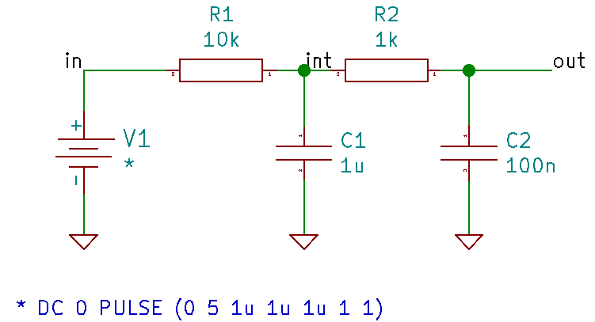

Created at: 2025-11-02
Transient circuit simulation analyses how a circuit's voltage, current, and other properties change over time, typically in response to a sudden input signal like a switch being turned on. It analysis changes that happen quickly.
Not to be confused with AC analysis, which analyses characteristics in the frequency domain, such as gain and impedance, by varying the input signal's frequency. In transient circuit analysis, the time is variable.
Given the following circuit (dual rc ladder):

Which can be expressed by
.title dual rc ladder
V1 in 0 dc 0 PULSE (0 5 1u 1u 1u 1 1)
R1 int in 10k
R2 out int 1k
C1 int 0 1u
C2 out 0 100n
.end
To start the transient simulation:
tran 50u 50m
To plot the nodes:
plot in int out